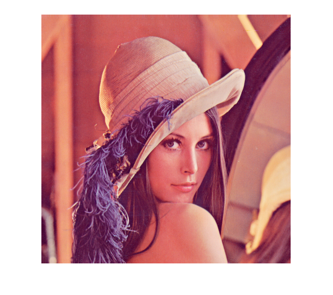

Ibw = imread('trees_nb.tif');
imtool(Ibw)
imfinfo('trees_nb.tif')
ans =
struct with fields:
Filename: 'C:\Users\pc\Desktop\master2\FINAL TIM FDD\...'
FileModDate: '24-Feb-2017 16:27:00'
FileSize: 4746
Format: 'tif'
FormatVersion: []
Width: 350
Height: 258
BitDepth: 1
ColorType: 'grayscale'
FormatSignature: [73 73 42 0]
ByteOrder: 'little-endian'
NewSubFileType: 0
BitsPerSample: 1
Compression: 'CCITT 1D'
PhotometricInterpretation: 'WhiteIsZero'
StripOffsets: [1×12 double]
SamplesPerPixel: 1
RowsPerStrip: 23
StripByteCounts: [1×12 double]
XResolution: 72
YResolution: 72
ResolutionUnit: 'Inch'
Colormap: []
PlanarConfiguration: 'Chunky'
TileWidth: []
TileLength: []
TileOffsets: []
TileByteCounts: []
Orientation: 1
FillOrder: 1
GrayResponseUnit: 0.0100
MaxSampleValue: 1
MinSampleValue: 0
Thresholding: 1
Offset: 4460

Igs = imread('lena_gray.tif');
imtool(Igs)
imfinfo('lena_gray.tif')
ans =
struct with fields:
Filename: 'C:\Users\pc\Desktop\master2\FINAL TIM FDD\...'
FileModDate: '24-Feb-2017 10:31:58'
FileSize: 285528
Format: 'tif'
FormatVersion: []
Width: 512
Height: 512
BitDepth: 8
ColorType: 'grayscale'
FormatSignature: [73 73 42 0]
ByteOrder: 'little-endian'
NewSubFileType: 0
BitsPerSample: 8
Compression: 'Uncompressed'
PhotometricInterpretation: 'BlackIsZero'
StripOffsets: 23338
SamplesPerPixel: 1
RowsPerStrip: 512
StripByteCounts: 262144
XResolution: 86.1245
YResolution: 86.1245
ResolutionUnit: 'Inch'
Colormap: []
PlanarConfiguration: 'Chunky'
TileWidth: []
TileLength: []
TileOffsets: []
TileByteCounts: []
Orientation: 1
FillOrder: 1
GrayResponseUnit: 0.0100
MaxSampleValue: 255
MinSampleValue: 0
Thresholding: 1
Offset: 8
Software: 'Adobe Photoshop CC 2015 (Windows)'
DateTime: '2017:02:24 11:31:53'
XMP: '<?xpacket begin="���" id="W5M0MpCehiHzreSz...'
Photoshop: [1×8688 double]
DigitalCamera: [1×1 struct]

[Iind, map] = imread('lena_color_256.gif');
imtool(Iind, map)
imfinfo('lena_color_256.gif')
ans =
struct with fields:
Filename: 'C:\Users\pc\Desktop\master2\FINAL TIM FDD\TIM\TP2\le...'
FileModDate: '24-Feb-2017 17:09:38'
FileSize: 227335
Format: 'GIF'
FormatVersion: '87a'
Left: 1
Top: 1
Width: 512
Height: 512
BitDepth: 8
ColorType: 'indexed'
FormatSignature: 'GIF87a'
BackgroundColor: 1
AspectRatio: 0
ColorTable: [256×3 double]
Interlaced: 'no'
[Iind16, map] = imread('lena_color_16.tif');
imtool(Iind16, map)
imfinfo('lena_color_16.tif')
ans =
struct with fields:
Filename: 'C:\Users\pc\Desktop\master2\FINAL TIM FDD\...'
FileModDate: '24-Feb-2017 17:35:00'
FileSize: 288396
Format: 'tif'
FormatVersion: []
Width: 512
Height: 512
BitDepth: 8
ColorType: 'indexed'
FormatSignature: [73 73 42 0]
ByteOrder: 'little-endian'
NewSubFileType: 0
BitsPerSample: 8
Compression: 'Uncompressed'
PhotometricInterpretation: 'RGB Palette'
StripOffsets: 26208
SamplesPerPixel: 1
RowsPerStrip: 512
StripByteCounts: 262144
XResolution: 72
YResolution: 72
ResolutionUnit: 'Inch'
Colormap: [256×3 double]
PlanarConfiguration: 'Chunky'
TileWidth: []
TileLength: []
TileOffsets: []
TileByteCounts: []
Orientation: 1
FillOrder: 1
GrayResponseUnit: 0.0100
MaxSampleValue: 255
MinSampleValue: 0
Thresholding: 1
Offset: 8
Software: 'Adobe Photoshop CC 2015 (Windows)'
DateTime: '2017:02:24 18:34:51'
XMP: '<?xpacket begin="���" id="W5M0MpCehiHzreSz...'
Photoshop: [1×10112 double]
DigitalCamera: [1×1 struct]
[Iind16_4, map] = imread('lena_color_16.bmp');
imtool(Iind16_4, map)
imfinfo('lena_color_16.bmp')
ans =
struct with fields:
Filename: 'C:\Users\pc\Desktop\master2\FINAL TIM FDD\TIM\TP2...'
FileModDate: '24-Feb-2017 18:39:22'
FileSize: 131192
Format: 'bmp'
FormatVersion: 'Version 3 (Microsoft Windows 3.x)'
Width: 512
Height: 512
BitDepth: 4
ColorType: 'indexed'
FormatSignature: 'BM'
NumColormapEntries: 16
Colormap: [16×3 double]
RedMask: []
GreenMask: []
BlueMask: []
ImageDataOffset: 118
BitmapHeaderSize: 40
NumPlanes: 1
CompressionType: 'none'
BitmapSize: 131074
HorzResolution: 2834
VertResolution: 2834
NumColorsUsed: 0
NumImportantColors: 0
Irvb = imread('lena_color_24.tif');
imtool(Irvb)
imfinfo('lena_color_24.tif')
ans =
struct with fields:
Filename: 'C:\Users\pc\Desktop\master2\FINAL TIM FDD\...'
FileModDate: '24-Feb-2017 13:09:38'
FileSize: 786572
Format: 'tif'
FormatVersion: []
Width: 512
Height: 512
BitDepth: 24
ColorType: 'truecolor'
FormatSignature: [77 77 0 42]
ByteOrder: 'big-endian'
NewSubFileType: 0
BitsPerSample: [8 8 8]
Compression: 'Uncompressed'
PhotometricInterpretation: 'RGB'
StripOffsets: 8
SamplesPerPixel: 3
RowsPerStrip: 4.2950e+09
StripByteCounts: 786432
XResolution: []
YResolution: []
ResolutionUnit: 'Inch'
Colormap: []
PlanarConfiguration: 'Chunky'
TileWidth: []
TileLength: []
TileOffsets: []
TileByteCounts: []
Orientation: 1
FillOrder: 1
GrayResponseUnit: 0.0100
MaxSampleValue: [255 255 255]
MinSampleValue: [0 0 0]
Thresholding: 1
Offset: 786440
figure, imshow(Irvb(:,:,1))
figure, imshow(Irvb(:,:,2))
figure, imshow(Irvb(:,:,3))
figure, imshow(Irvb(:,:,:))

I24gray = imread('lena_gray_24.bmp');
imtool(I24gray)
imfinfo('lena_gray_24.bmp')
ans =
struct with fields:
Filename: 'C:\Users\pc\Desktop\master2\FINAL TIM FDD\TIM\TP2...'
FileModDate: '24-Feb-2017 18:30:14'
FileSize: 786488
Format: 'bmp'
FormatVersion: 'Version 3 (Microsoft Windows 3.x)'
Width: 512
Height: 512
BitDepth: 24
ColorType: 'truecolor'
FormatSignature: 'BM'
NumColormapEntries: 0
Colormap: []
RedMask: []
GreenMask: []
BlueMask: []
ImageDataOffset: 54
BitmapHeaderSize: 40
NumPlanes: 1
CompressionType: 'none'
BitmapSize: 786434
HorzResolution: 3390
VertResolution: 3390
NumColorsUsed: 0
NumImportantColors: 0
I = imread('coins.png');
BW = imbinarize(I);
figure,imshowpair(I,BW,'montage')
I = imread('rice.png');
BW = imbinarize(I,'adaptive');
figure,imshowpair(I,BW,'montage')
load trees
BW = im2bw(X,map,0.4);
imshow(X,map),figure,imshow(BW)
I = imread('printedtext.png');
figure,imshow(I)
title('Original Image')
BW = imbinarize(I,'adaptive','ForegroundPolarity','dark','Sensitivity',0.4);
figure,imshow(BW)
title('binary version of the image')
Warning: Image is too big to fit on screen; displaying at 50%
Warning: Image is too big to fit on screen; displaying at 50%
I = imread('cameraman.tif');
[X,map] = gray2ind(I, 256);
imtool(X, map);
figure, imshowpair(I,X,'montage')
RGB = imread('ngc6543a.jpg');
figure('Name','RGB Image')
imagesc(RGB)
axis image
zoom(4)
[IND,map] = rgb2ind(RGB,32);
figure('Name','indexed image with 32 colors')
imagesc(IND)
colormap(map)
axis image
zoom(4)
load trees
I = ind2gray(X,map);
imshow(X,map)
figure,imshow(I)
[I,map]=imread('autumn.tif');
imshow(I);
figure, imshow(X,map);